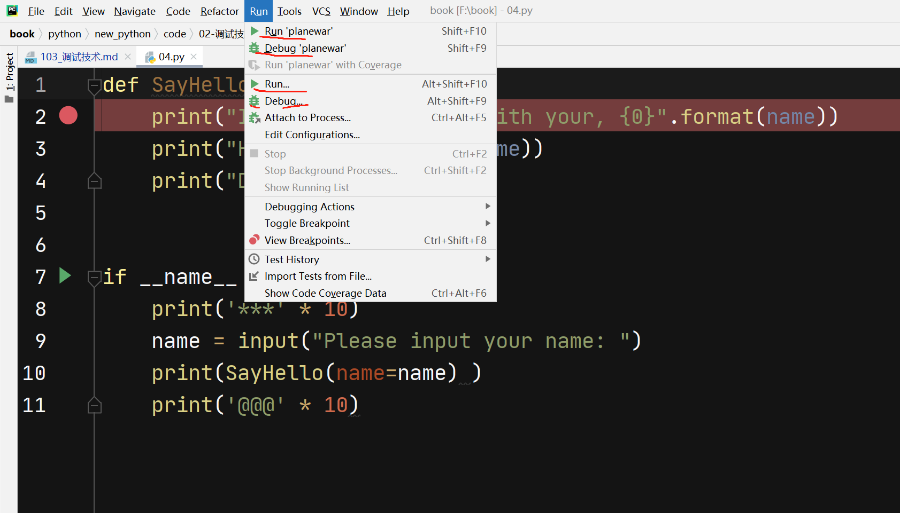
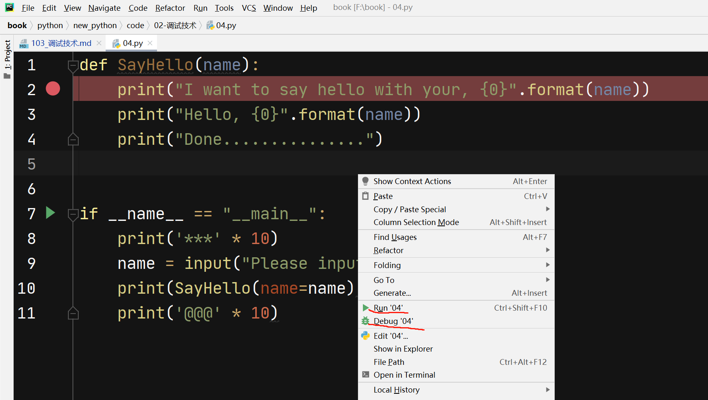
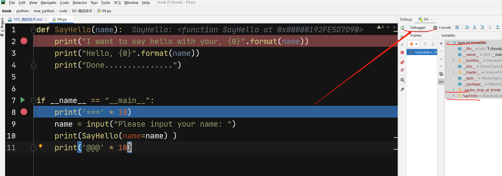
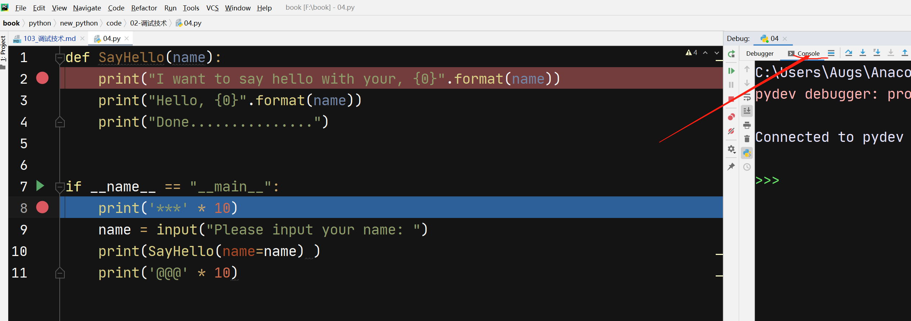
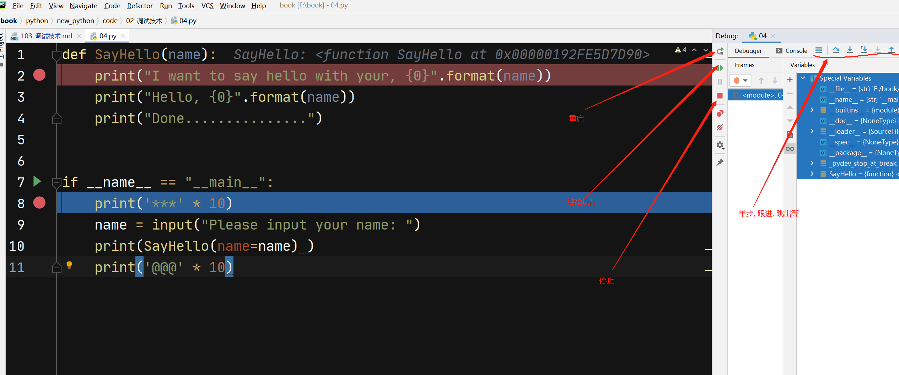

3. 调试技术
程序调试是将编制的程序投入实际运行前，用手工或编译程序等方法进行测试，修正语法错误和逻辑错误的过程。
这是保证计算机信息系统正确性的必不可少的步骤。
编完计算机程序，必须送入计算机中测试。根据测试时所发现的错误，进一步诊断，找出原因和具体的位置进行修正
调试分类：
静态调试：以看为主，看源代码，输出寄存器内容，输出变量值
动态调试：程序运行中人为控制运行节奏和步骤
3.1. 几个概念
断点(breakpoint): 程序中某一个位置,再调试模式(debug)下运行,程序执行到这个点就会停住,等待你下一步命令
调试模式(debug): 程序运行,遇到断点会挺住,方便交互式运行代码
运行模式(run): 程序正常执行命令,自动忽略断点
3.2. pdb调试
pdb调试是应对的命令行样式的开发, 现在用处比较少, 再个别远程调试中或许还有用到,但很少遇到了.
了解pdb调试主要是了解调试的一些基础概念.
推荐文章
pdb调试启动方式分两种：
命令行启动
代码中加入调试包, 直接命令启动
3.2.1. 命令行启动pdb
下面代码是被测代码:
# 01.py, 这个名字起的很魔幻,请自动忽略
a = "i love chian"
b = "and you"
print(a + b)
c = 5
print(a + c)
代码很简单,但我们需要一行一行运行代码,此时需要启动pdb调试, 则直接运行:
python -m pdb 01.py
启动后会直接进入命令行,通过输入不同命令会执行不同的操作, 如果不清楚,可以通过帮助文档查看命令, 调试命令很少,参看下面:
(base) F:\book\python\new_python\code\02-调试技术>python -m pdb 01.py
> f:\book\python\new_python\code\02-调试技术\01.py(2)<module>()
-> a = "i love chian"
其中, 打开程序后会显示一个箭头指向的内容,表明程序现在正准备执行这一行, 及下面的代码:
-> a = "i love chian"
再输入帮助命令后,显示此调试支持的命令:
(Pdb) help
Documented commands (type help <topic>):
========================================
EOF c d h list q rv undisplay
a cl debug help ll quit s unt
alias clear disable ignore longlist r source until
args commands display interact n restart step up
b condition down j next return tbreak w
break cont enable jump p retval u whatis
bt continue exit l pp run unalias where
Miscellaneous help topics:
==========================
exec pdb
(Pdb)
下面根据不同的意图就可以进入不同的操作, 但上面的操作命令可能并不清晰,比如我想知道c代表什么意思, 可以继续借助帮助:
(Pdb) help c
c(ont(inue))
Continue execution, only stop when a breakpoint is encountered.
(Pdb)
上面解释了c命令就是continue的缩写,所以我们如果想让程序继续执行,知道遇到断点,直接敲入c命令即可:
(Pdb) c
i love chianand you
Traceback (most recent call last):
File "C:\Users\Augs\Anaconda3\lib\pdb.py", line 1667, in main
pdb._runscript(mainpyfile)
File "C:\Users\Augs\Anaconda3\lib\pdb.py", line 1548, in _runscript
self.run(statement)
File "C:\Users\Augs\Anaconda3\lib\bdb.py", line 434, in run
exec(cmd, globals, locals)
File "<string>", line 1, in <module>
File "f:\book\python\new_python\code\02-调试技术\01.py", line 2, in <module>
a = "i love chian"
TypeError: must be str, not int
Uncaught exception. Entering post mortem debugging
Running 'cont' or 'step' will restart the program
> f:\book\python\new_python\code\02-调试技术\01.py(2)<module>()
-> a = "i love chian"
(Pdb)
敲入继续命令后, 则继续执行知道程序末尾(因为没设置端点), 最后会打印出相应错误信息,并告诉你可以通过cont或者step命令重启调试.
3.2.2. 代码启动pdb
如果想经常调试,可以再代码中直接写入调试命令,下面代码则是直接把调试模块导入后执行:
# 文件名 02.py
# 导入调试后设置
import pdb
pdb.set_trace()
a = "i love chian"
b = "and you"
print(a + b)
c = 5
print(a)
对于这类文件, 调试的时候直接运行即可, 使用下面代码:
python 02.py
剩下的跟上面打开方式的调试一致.
3.2.3. pdb调试案例
参看下面代码:
import pdb
pdb.set_trace()
def func(n):
for i in range(1,n):
print("LOOP {0} ".format(i))
print("Func is done!!!")
if __name__ == "__main__":
print("Start my software..........")
func(10)
print("Software is done !!!!!!!!")
上面代码很简单,我们用pdb主要展示常用几个命令即可,其中#后内容我大拿加的注释, 原来并没有:
(base) F:\book\python\new_python\code\02-调试技术>python 03.py
> f:\book\python\new_python\code\02-调试技术\03.py(3)<module>() #启动
-> def func(n):
(Pdb) l #浏览代码
1 import pdb
2 pdb.set_trace()
3 -> def func(n): #表示当前运行的行
4 for i in range(1,n):
5 print("LOOP {0} ".format(i))
6
7 print("Func is done!!!")
8
9 if __name__ == "__main__":
10 print("Start my software..........")
11 func(10)
(Pdb) b 5 #在第五行上设置断点
Breakpoint 1 at f:\book\python\new_python\code\02-调试技术\03.py:5
(Pdb) c #运行到断点处
Start my software..........
> f:\book\python\new_python\code\02-调试技术\03.py(5)func()
-> print("LOOP {0} ".format(i))
(Pdb) c #运行到下一个断点处
LOOP 1 #显示这事第一次循环
> f:\book\python\new_python\code\02-调试技术\03.py(5)func()
-> print("LOOP {0} ".format(i))
(Pdb) c
LOOP 2
> f:\book\python\new_python\code\02-调试技术\03.py(5)func()
-> print("LOOP {0} ".format(i))
(Pdb) clear #清除所有断点
Clear all breaks? y
Deleted breakpoint 1 at f:\book\python\new_python\code\02-调试技术\03.py:5
(Pdb) l
1 import pdb
2 pdb.set_trace()
3 def func(n):
4 for i in range(1,n):
5 -> print("LOOP {0} ".format(i))
6
7 print("Func is done!!!")
8
9 if __name__ == "__main__":
10 print("Start my software..........")
11 func(10)
(Pdb) n 1
LOOP 3
> f:\book\python\new_python\code\02-调试技术\03.py(4)func()
-> for i in range(1,n):
(Pdb) c
LOOP 4
LOOP 5
LOOP 6
LOOP 7
LOOP 8
LOOP 9
Func is done!!!
Software is done !!!!!!!!
3.3. pycharm调试
Pycharm只是一个工具, 调试的目的跟pdb一致,所以, 用法上除了这是一个图形用户界面的产品, 跟命令行调试本质上一致.
运行分为
run/debug模式, 菜单run下面有相关按钮, 并配有相应快捷键
3.3.1. 案例
调试以下代码:
def SayHello(name):
print("I want to say hello with your, {0}".format(name))
print("Hello, {0}".format(name))
print("Done...............")
if __name__ == "__main__":
print('***' * 10)
name = input("Please input your name: ")
print(SayHello(name=name) )
print('@@@' * 10)
运行和调试的区别我们已经了解了, 再pycharm中分别可以执行:
可以使用菜单运行调试:

也可以右键后直接启动:

鼠标点红色点那个竖条会自动设置断点:

右侧是快捷按钮:

